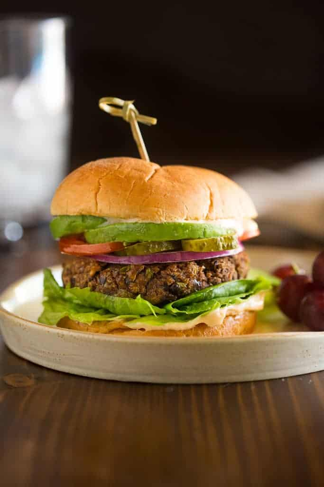

Black Bean Burgers

A quick non-meat dinner
These burgers are a delicious, healthy alternative to traditional meat burgers.
The burgers are still full of protein, but have less calories and cholesterol overall.
They are easy to prepare and hold together well enough to be grilled on a traditional outdoor grill.
I have also made this inside on with an indoor electric grill with excellent results!
Ingredients
For the Burgers
- 15 oz can black beans , drained and rinsed
- 1/2 green bell pepper
- 1/2 small onion
- 2 cloves garlic, peeled
- 1 large egg, beaten
- 2/3 cup whole wheat breadcrumbs
- 1 Tbsp chili powder
- 1 tsp cumin
- Salt and freshly ground black pepper , to taste
For the chipotle mayo sauce
- 1 cup mayonnaise
- 2 chipotle peppers in adobo sauce
- 1 Tbsp adobo sauce from the can of chipotle peppers in adobo sauce
- 2 teaspoons lime juice
- Salt and freshly ground black pepper
- Hamburger buns
- Desired burger toppings: lettuce, tomato, avocado, onions, pickles, etc.
Recipe Directions
Making the burgers
- Place rinsed and drained black beans in a bowl. If needed, blot them with a paper towel to remove any extra moisture. Place in a large bowl and mash well with a fork
- Place the bell pepper, onion and garlic in a food processor and process until finely minced.
- Transfer mixture to a fine mesh strainer to remove the excess water. (Remove as much moisture as you can--if it's too wet, the burger wont hold together as well.)
- Add the strained vegetable mixture to the bowl with the black beans. Add the chili powder, cumin and salt and pepper and stir to combine.
- Add beaten egg and mix. Stir in bread crumbs. Form mixture into 4 or 5 patties.
Options for next steps
- Grill the burgers on a well oiled grill for about 4-5 minutes on each side.
- Bake them at 375 degrees F on a lightly oiled baking sheet, for 10 minutes on each side.
- Cook them on your stove using a grill pan, for 4-5 minutes on each side.
- Refrigerate them for later or freeze them, covered, in a freezer bag.
Making chipotle sauce
- Add all the ingredients to a food processor or blender and puree until smooth. Season with salt and pepper to taste.
- Serve burgers on a white or whole wheat bun topped with a spoonful of chipotle mayo, lettuce, tomato, cheese, avocado, or any other desired toppings!
Return to top
Return to main page